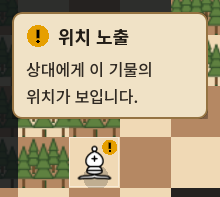
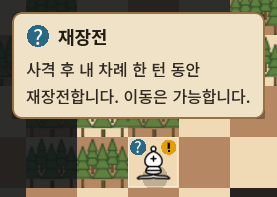
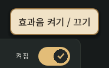
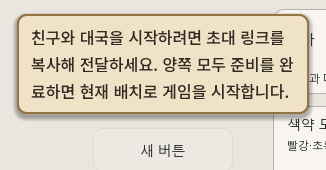

FOGCHESS · UNIFIED TOOLTIPS
한 가지 설명 카드,
더 선명해진 글자와 상태 배지
일반 UI와 보드 상태 툴팁을 동일한 양피지색·테두리·글꼴 규칙으로 통일했습니다.
이전 변경 후 · 실제 실행 화면
변경 후 · 실제 실행 화면
읽기 쉬운 글자와 크기
- 기본 시스템 글꼴 대신 게임에 포함된 Noto Sans KR을 사용합니다.
- 상태 제목은 18px·700 굵기, 본문과 일반 툴팁은 16px·500 굵기입니다.
- 글자색은 짙은 갈색에 가까운 검정으로 바꿨고, 본문 줄 간격을 확보했습니다.
- 짧은 문장은 작은 카드에 맞추고, 긴 문장은 제한된 폭에서 줄바꿈합니다.
기물의 배지를 그대로 사용
노란 원 안의 느낌표와 파란 재장전 배지를 제목에 사용합니다. 보드와 툴팁이 같은 그리기 함수를 호출하므로, 각자 비슷한 아이콘을 따로 만드는 방식이 아닙니다. 원래 보드 배지의 색·비율과 기물 디자인은 유지했습니다.

일반 UI에도 적용
설정의 짧은 도움말
긴 설명의 자동 줄바꿈
설정·메뉴·행동 버튼뿐 아니라 나중에 생성되는 UI와 팝업 내부에도 공통 규칙이 적용됩니다. 커서 위의 간격과 화면 가장자리 처리는 유지했습니다.
검증
공통 툴팁 36 · 상태 툴팁 24 · 보드 UI 128 · 기존 UX 58 · 총 246개 통과.
327개 보호 파일 해시가 같으며, 보드 소스는 배지 그리기의 공통 함수 추출 외에 변경되지 않았습니다. 일반/상태 설명의 실제 호버, 팝업 내부, 밝은 테마, 긴 문장과 320px 화면 경계를 확인했습니다.
실제 모바일·웹 배포본은 미검증입니다. 기존 UX 검사 종료 시 ObjectDB 2개 정리 경고가 남았으며 스크립트 오류는 없습니다. 웹 빌드·운영 배포·커밋은 수행하지 않았습니다.
검증 기록 · 소스 변경 내역